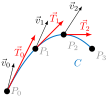
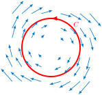
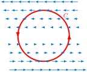
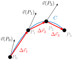
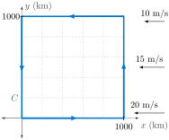
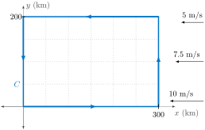
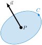
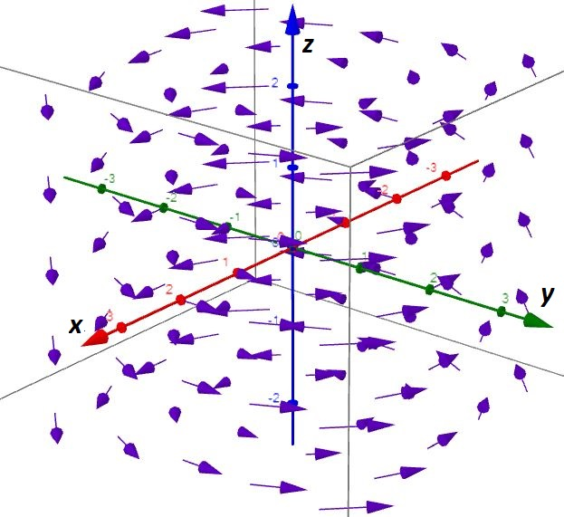
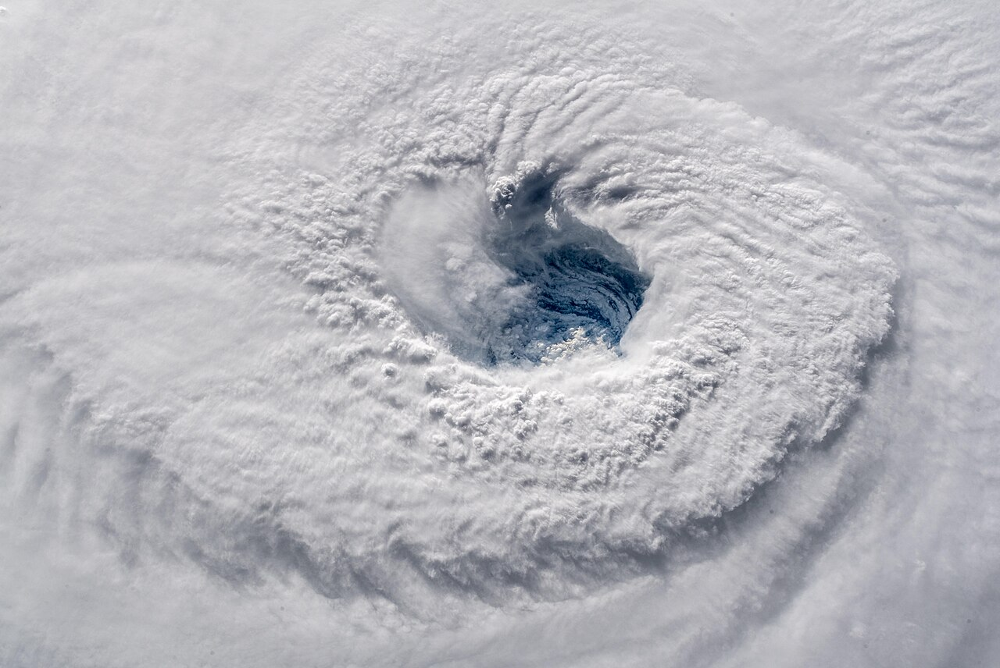

In a vector field, what is circulation and how do we measure it?
What is the difference between circulation and vorticity in a vector field?
What is circulation density and how is it calculated?
To see where the term circulation comes from and what it measures, let \(\vec{v}\) represent the velocity field of a fluid and let \(C\) be an oriented curve. If \(\vec{T}(P)\) represents a (unit) tangent vector to \(C\) at point \(P\text{,}\) then \(\vec{v}(P) \cdot \vec{T}(P)\) measures how aligned the vector field \(\vec{v}\) or flow is with the oriented curve at \(P\text{.}\)
Taking several points \(P_i\) on the curve \(C\text{,}\) computing the dot products \(\vec{v}(P_i) \cdot \vec{T}(P_i)\text{,}\) and then adding up these values will give us a number. This value (positive, negative, and size) tells us just how much \(C\) goes with the flow (or goes against it).

Figure6.2.1.The sum of dot products \(\vec{v}_0 \cdot \vec{T}_0 +\vec{v}_1 \cdot \vec{T}_1 + \vec{v}_2 \cdot \vec{T}_2\) is a measure of how aligned the vector field \(\vec{v}\) is to the oriented curve \(C\) (oriented from \(P_0\) to \(P_3\text{,}\) for example).
Circulation, often denoted by \(\Gamma\text{,}\) will measure how much a closed oriented curve \(C\) goes with the flow of a vector field \(\vec{v}\text{.}\) A definite integral can be used to produce the value of \(\Gamma\text{.}\)
Circulation, \(\Gamma\text{,}\) is a number.
\(\Gamma\) will be positive if \(C\) goes with the flow; negative if \(C\) goes against the flow.
The magnitude of the circulation measures how much the flow is with \(C\text{.}\)
Example6.2.2.
The circulation \(\Gamma\) for the closed, oriented curve \(C\) in the vector field \(\vec{v}\) shown in Figure 6.2.3 is negative.

Figure6.2.3.A vector field \(v\) and oriented curve \(C\) having negative circulation \(\Gamma\text{.}\)
The circulation \(\Gamma\) for the closed, oriented curve \(C\) in the vector field \(\vec{v}\) shown in Figure 6.2.4 is positive.

Figure6.2.4.A vector field \(v\) and oriented curve \(C\) having positive circulation \(\Gamma\text{.}\)
Checkpoint6.2.5.Positive or Negative Circulation?
Consider again a vector field \(\vec{v}\) and an oriented curve \(C\) as shown in Figure 6.2.6. Begin by dividing \(C\) into \(n\) small, nearly straight pieces along which \(\vec{v}\) is approximately constant. Each piece can be represented by a displacement vector \(\Delta \vec{r}_i\) that joins \(P_{i-1}\) to \(P_{i}\text{.}\)

Figure6.2.6.Dividing a curve \(C\) into pieces in order to approximate circulation \(\Gamma\text{.}\)
The value of \(\vec{v}\) at each point of this small piece of \(C\) is approximately \(\vec{v}(P_i)\text{.}\) If an object experiences a displacement along a closed curve \(C\text{,}\) the circulation \(\Gamma\) caused by the vector field \(\vec{v}\) is approximately
When the oriented curve \(C\) is not closed, the value we approximate still has meaning (and measures how much \(C\) ’goes with the flow’). We call the limiting value in the above expression a line integral.
Definition6.2.7.Line Integral.
The line integral of a vector field \(\vec{v}\) along an oriented curve \(C\) is
In the following example, we investigate circulation in the context of wind.
Example6.2.10.Circulation from Wind.
Suppose the wind velocity vector field \(\vec{v}\) is easterly and decreasing at a rate of \(10 \frac{m}{s}\) per \(1000 \ km\) toward the north (see Figure 6.2.11). That is, \(\vec{v} = -(20-y/100 \frac{m}{s})\vec{i}\text{.}\) We determine the circulation \(\Gamma\) about a \(1000 \ km \times 1000 \ km\) square that is oriented in a counterclockwise fashion.

Figure6.2.11.Oriented curve \(C\) and vector field \(\vec{v}\) used in Example 6.2.10.
Since the contour \(C\) is made up of four line segments, computation of the line integral giving \(\Gamma\) becomes the sum
It makes sense that \(\Gamma\) is negative - the wind is more against \(C\) than it is with \(C\text{.}\) Note also the units of the circulation are area per second.
Checkpoint6.2.12.Circulation from Wind II.
Determine the circulation \(\Gamma\) about a \(300 \ {\rm{km}} \times 200 \ {\rm{km}}\) rectangle where the (wind) velocity vector \(\vec{v}\) is easterly and decreasing linearly at a rate of \(2.5 \ \frac{m}{s}\) per \(100 \ {\rm{km}}\) toward the north. That is, \(\vec{v} = -(10-y/40 \frac{m}{s})\vec{i}\text{.}\)

Figure6.2.13.Oriented curve \(C\) and vector field \(\vec{v}\) used in Checkpoint 6.2.12.
Understanding circulation in three dimensions may be easier with the help of a paddlewheel (see Figure 6.2.14). Let \(\vec{v}(x,y,z)\) be a vector field and imagine placing a tiny paddlewheel in the vector field at the point \((x, y, z)\) so that the handle points in the direction of the axis that you want to measure the circulation of \(\vec{v}\) around.
The angular velocity of the paddlewheel measures the strength of the circulation.
The circulation is positive if the rotation is counterclockwise and negative if the rotation is clockwise (as you look down the handle of the paddlewheel).
Example6.2.15.Circulation - Positive, Negative, or Zero?
Circulation and vorticity are two measures of rotation of a vector field.
Circulation around a closed curve \(C\text{,}\)\(\Gamma\text{,}\) is a number. It is a macroscopic measure of rotation in a finite region (of the fluid, such as air).
Vorticity is a vector field. It is a microscopic measure of rotation at any point (in the fluid).
Macroscopic and microscopic circulation need not be related. You can have one without the other. Imagine a leaf circling in an eddy in a river. The leaf may not be spinning. Or, the leaf may spin about its center as it floats down the river.
While circulation is helpful in understanding macroscopic rotation, the concept of circulation density is of more value in understanding microscopic rotation. We now introduce this concept in order to measure vorticity.
Definition6.2.16.Circulation Density.
The circulation density of a smooth vector field \(\vec{v}\) at \(P = (x,y,z)\) around the direction of a unit vector \(\vec{n}\) is defined as
where \(C\) is a circle centered at \(P\) and perpendicular to \(\vec{n}\text{.}\)

Figure6.2.17.Circulation Density.
Think of \(\vec{n}\) in Figure 6.2.17 as the handle of a paddlewheel. The orientation of the circle \(C\) is determined by the right-hand rule: If you place your right thumb in the direction of \(\vec{n}\text{,}\) your fingers curl in the direction of \(C\text{.}\) The quantity \(circ_{\vec{n}}\vec{v}\) measures the circulation per unit area around \(\vec{n}\text{.}\)
Example6.2.18.Direction of Greatest Circulation.
A vector field \(\vec{v}(x,y,z)\) is shown in Figure 6.2.19. For approximately what value of \(\vec{n}\) does \(circ_{\vec{n}}\vec{v}(0,0,0)\) appear to be the greatest? Choosing \(\vec{n} = \vec{k}\) would produce the greatest circulation because it appears that placing the paddlewheel so that the handle points straight up would result in the fastest counterclockwise rotation.

Figure6.2.19.\(circ_{\vec{n}}\vec{v}(0,0,0)\) appears to be the greatest when \(\vec{n} = \vec{k}\text{.}\)
ExercisesExercises
1.Sign of a Line Integral III.
2.Wind Around a Lake.
Wind around a circular lake of radius 2 km blows in a counterclockwise circular pattern around the lake with wind speed increasing linearly with distance from the center. The wind reaches a maximum speed of 10 meters per second at the edge of the lake. Calculate the circulation, \(\Gamma\text{,}\) around the lake.
Answer.
The path \(C\) we will use is a circle with radius 2 km. At each point on \(C\text{,}\) the direction of the vector field (the wind) is parallel to the direction of travel around the lake. Vectors in the wind field \(\vec{v}\) with tangent vectors to the curve \(C\) are then always parallel. This means all dot products in any approximation to the line integral being computed will be the product of the length of the length of wind vectors and the length of tangent vectors to the curve. The line integral will then be product of 10 meters per second and \(2\pi(2 {\rm{km}})\text{.}\) This give a circulation of \(\Gamma = 40,000\pi\) square meters per second.
3.Wind Around Eye of Hurricane.
A hurricane has a circular eye of radius 10 km. The wind blows in a counterclockwise direction around the eye. The wind speed at the edge of the eye is 50 meters per second and decreases linearly to 0 as one approaches the center of the eye. Calculate the circulation, \(\Gamma\text{,}\) around a circular path with a radius of 3 km centered at the eye of the hurricane.

Figure6.2.20.Hurricane Florence, seen from the International Space Station, showing a well-defined eye at the center of the storm. Source:Alexander Gerst (Public Domain) 84
The path \(C\) is a circle with radius 3 km. At each point on \(C\text{,}\) the direction of the vector field (the wind) is parallel to the direction of travel around the eye. So to compute the circulation we can simply multiply the (constant) strength of the wind field with the length of the path around the eye. This is the product of 15 meters per second (the strength is 30% of 50 meters per second) and \(2\pi(3 {\rm{km}})\text{.}\) This give a circulation of \(\Gamma = 90,000\pi\) square meters per second.
4.Circulation Around Pentagonal Path.
Circulation \(\Gamma\) around a path \(C\) due to a wind \(\vec{v}\) can be computed via a line integral \(\Gamma = \int_C \vec{v} \cdot d\vec{r}\text{.}\) In this exercise, we estimate \(\Gamma\) around a polygonal path \(C\) that is oriented counterclockwise. To estimate, we view the calculation for a horizontal wind \(\vec{v}\) as a dot product
\(\vec{v}_i\) represents the wind vector on the \(i^{th}\) segment of \(C\text{,}\)
\(\vec{T}_i\) represents a vector tangent to \(C\text{,}\) pointing in the direction \(C\) is being traversed, and having length that of the \(i^{th}\) segment of \(C\text{,}\) and
\(\theta_i\) is the angle between vectors \(\vec{v}_i\) and \(\vec{T}_i\text{.}\)
Table6.2.22.Wind speeds and directions along path found in Figure 6.2.21.
Location
Wind Direction
Wind Speed
\(A*\)
\(240^{\circ}\)
20 knots
\(B*\)
\(180^{\circ}\)
15 knots
\(C*\)
\(180^{\circ}\)
12 knots
\(D^*\)
\(90^{\circ}\)
8 knots
\(E^*\)
\(120^{\circ}\)
10 knots
Locations A* through E* on path \(C\) have wind data (taken from METARs) as given in Table 6.2.22.
Fill in Table 6.2.23 with values of \(\|\vec{v}_i\|\text{,}\)\(\|\vec{T}_i\|\text{,}\) and \(\theta_i\) along path \(C\text{.}\) Values for locations \(D^*\) and \(E^*\) are provided.
Table6.2.23.Values of \(\|\vec{v}_i\|\text{,}\)\(\|\vec{T}_i\|\text{,}\) and \(\theta_i\) along path \(C\) shown in Figure 6.2.21.
Location
\(\|\vec{v}_i\|\)
\(\|\vec{T}_i\|\)
\(\theta_i\)
\(A^*\)
\(B^*\)
\(C^*\)
\(D^*\)
\(8\) knots
\(0.4\) NM
\(0^{\circ}\)
\(E^*\)
\(10\) knots
\(0.5\) NM
\(120^{\circ}\)
Calculate, approximately, the circulation \(\Gamma\) for \(C\text{.}\) Be sure to include units.
Answer.
The angle between the direction of the wind and the tangent to \(C\) is the difference between \(90^{\circ}-\)Wind Direction given and the direction of motion.
Table6.2.24.Values of \(\|\vec{v}_i\|\text{,}\)\(\|\vec{T}_i\|\text{,}\) and \(\theta_i\) along path \(C\) shown in Figure 6.2.21.
A sea breeze is a coastal wind that blows from sea to land, caused by the temperature difference when the sea surface is colder than the adjacent land. Explain how the strength of the sea breeze is related to the concept of circulation.